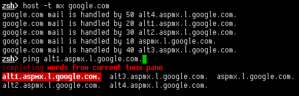

Today I wrote a rather cool Z-Shell completion function: It will
present all words that are found in the current tmux pane in a zsh
completion menu. That means you can actually complete words from the
output of commands that you just executed. (In a way it's a little
bit like the keeper
function,
without the overhead of remembering to call keeper in the first place.)
The code below defines two keybindings:
176.9.247.89
somewhere in the pane, try typing .9 and hitting Ctrl-X twice.
It'll complete to that IP address.Here's the code:
_tmux_pane_words() {
local expl
local -a w
if [[ -z "$TMUX_PANE" ]]; then
_message "not running inside tmux!"
return 1
fi
w=( ${(u)=$(tmux capture-pane \; show-buffer \; delete-buffer)} )
_wanted values expl 'words from current tmux pane' compadd -a w
}
zle -C tmux-pane-words-prefix complete-word _generic
zle -C tmux-pane-words-anywhere complete-word _generic
bindkey '^Xt' tmux-pane-words-prefix
bindkey '^X^X' tmux-pane-words-anywhere
zstyle ':completion:tmux-pane-words-(prefix|anywhere):*' completer _tmux_pane_words
zstyle ':completion:tmux-pane-words-(prefix|anywhere):*' ignore-line current
zstyle ':completion:tmux-pane-words-anywhere:*' matcher-list 'b:=* m:{A-Za-z}={a-zA-Z}'
How does it work? _tmux_pane_words will just capture the current
pane's contents (capture-pane), print out the buffer that
contains it (show-buffer) and then delete it again
(delete-buffer). – The rest of the magic happens via Zsh's
excellent completion mechanisms.
See it in action (after typing spm^X^X):

Update 2013-10-06: Daniel points out that since March ’13, there
is a switch -p for capture-pane to print the contents to stdout;
also, using the newly introduced -J switch, wrapped words will be
joined. See his adaption here.